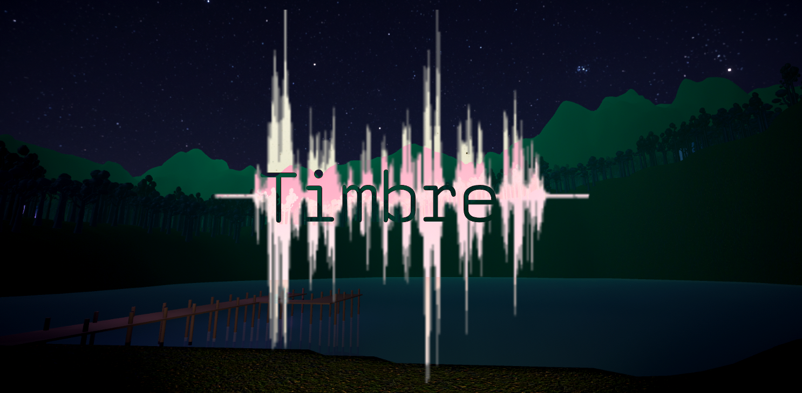
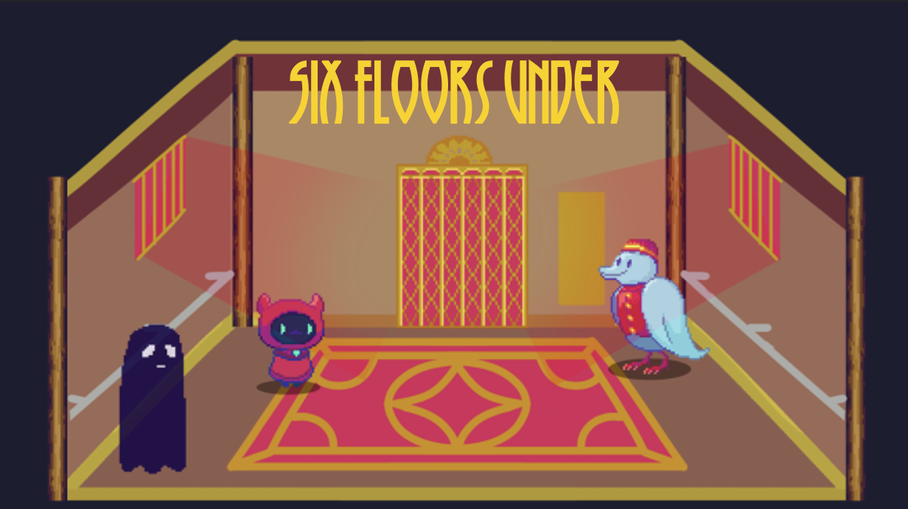
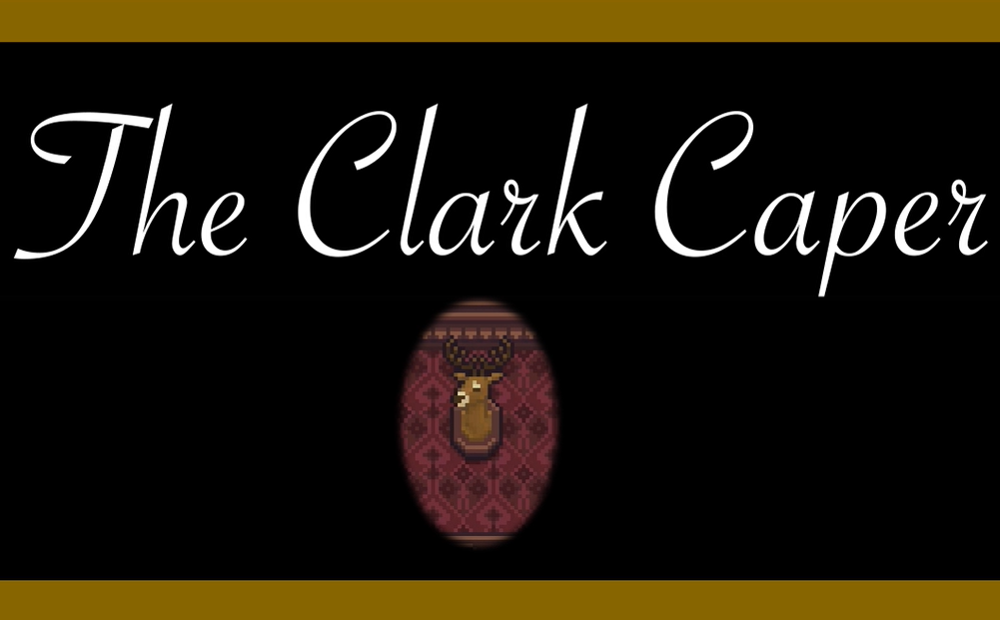
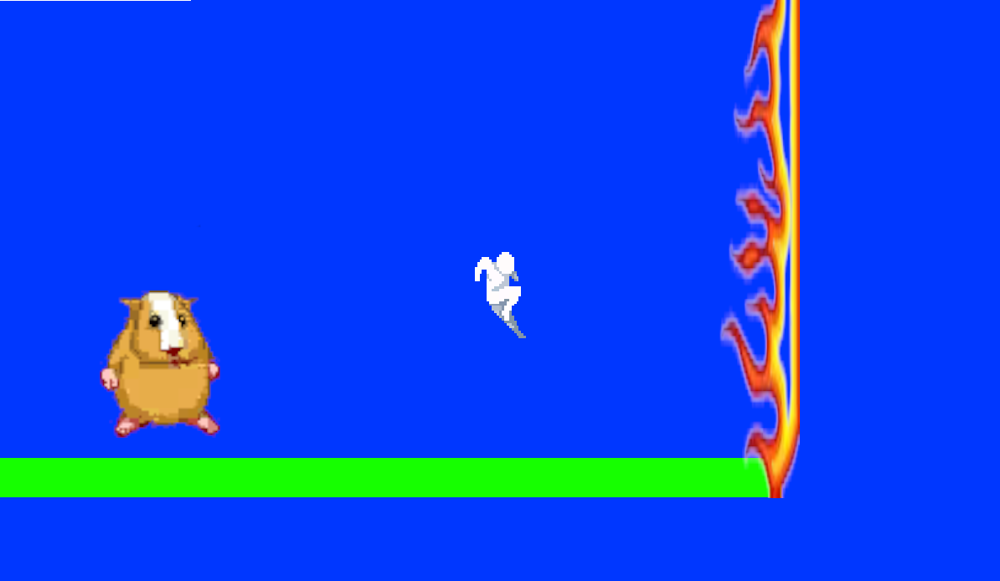
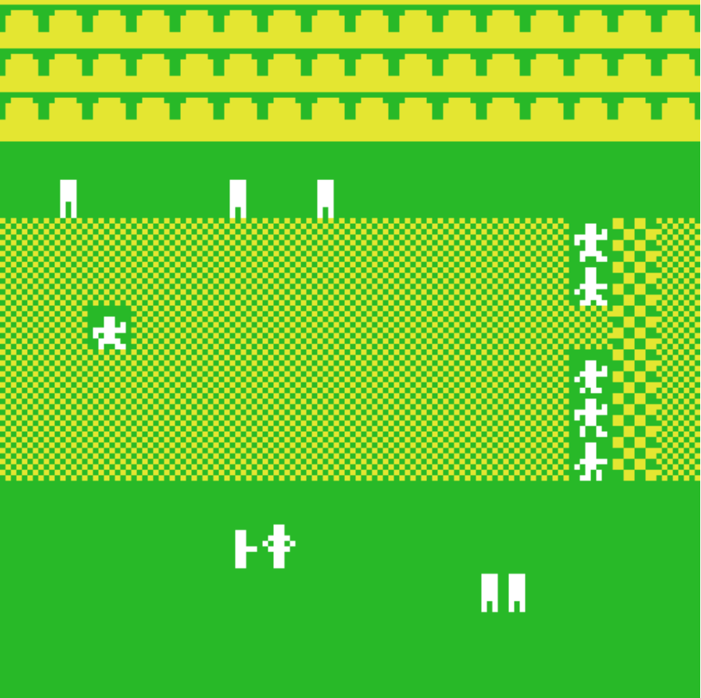

Games
Timbre
Currently in development, Timbre is a psychological horror game which utilizes mic detection and recognition.
Six Floors Under
Currently in development, Six Floors Under is a choice-driven game in which you play as a deceased soul descending to your afterlife in an elevator.
The Clark Caper
Made over the course of four weeks, The Clark Caper is a short murder mystery game set in the 1920s in which the choices the player makes determine who the victim will be.
Crustfallen
Made for Crust Jam 2024, Crustfallen is a combat-focused platformer that pays tribute to early internet-era website design.
The 1904 Olympic Marathon
The 1904 Olympic Marathon is a lighthearted simulation of the historical race of the same name. You play as Thomas Hicks as he goes through what has been called the most poorly planned marathon in history.
Artifice

Artifice is a Twine game made in the space of one week. You play as an artificer named Dr. Ingrid Peren as she navigates a world approaching ruin due to a calamitous thundestorm.